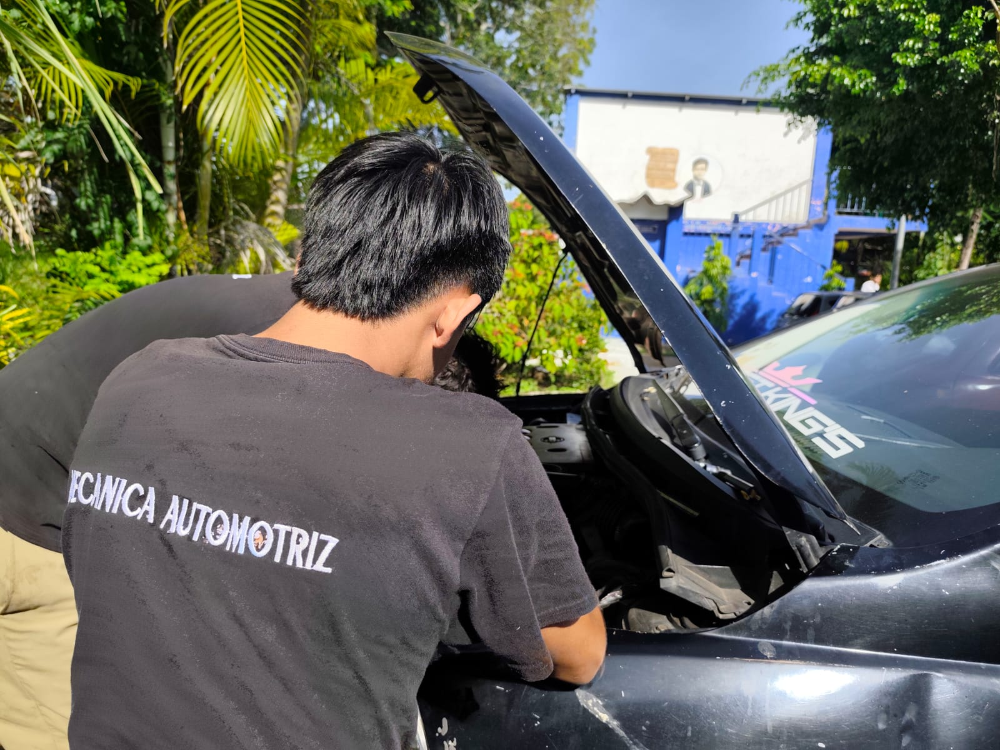
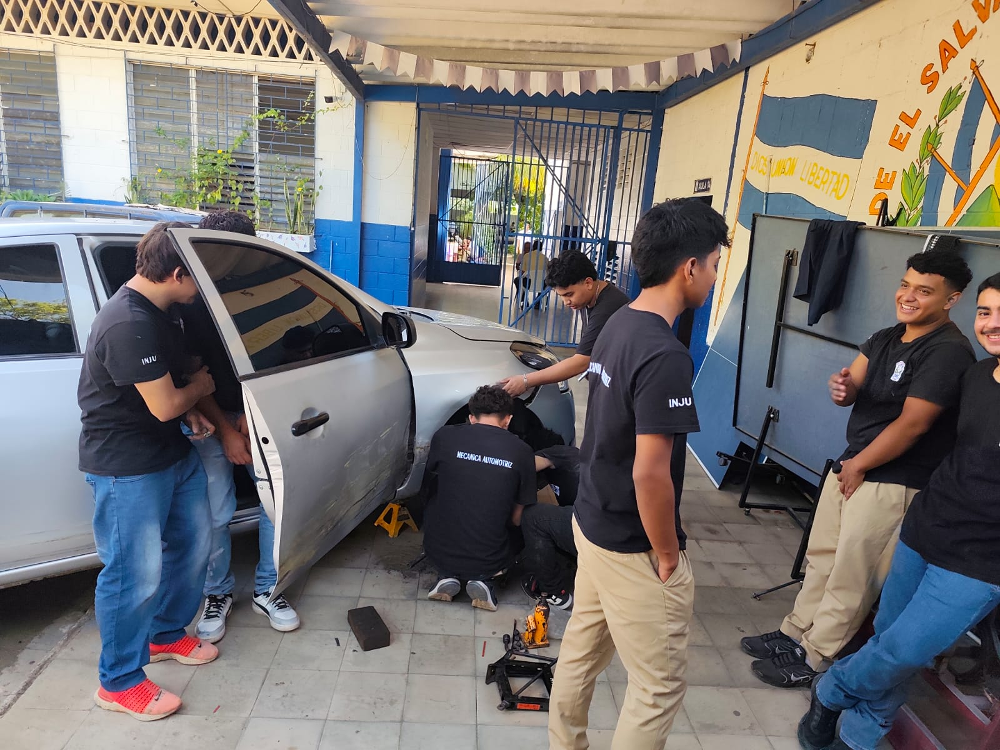
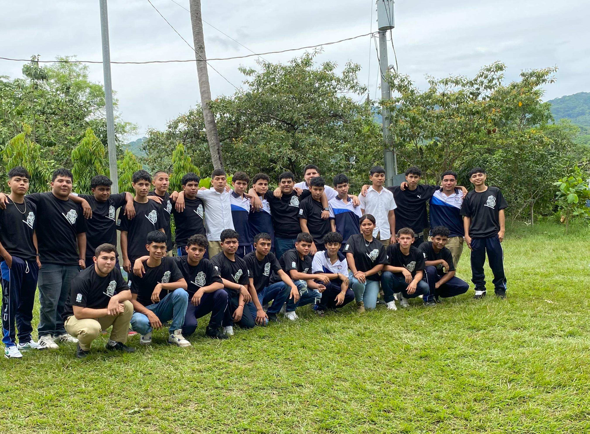
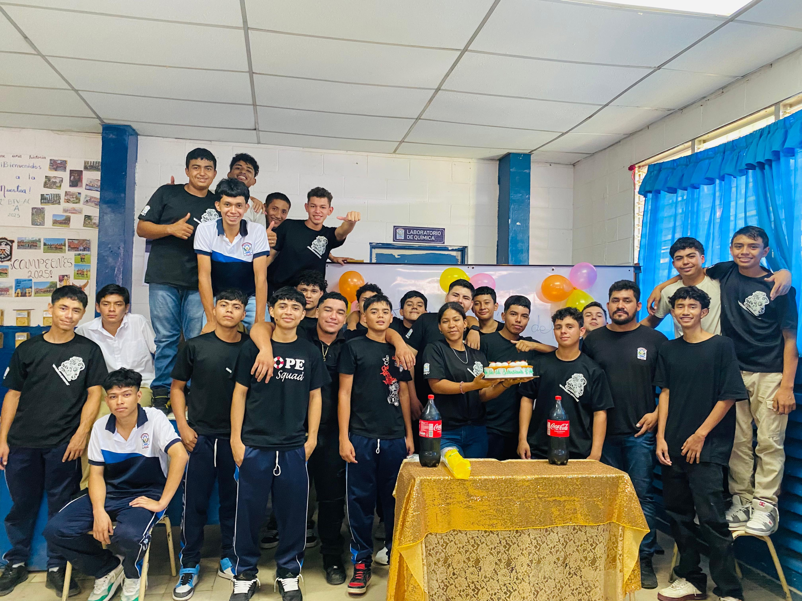

Formación técnica especializada en sistemas automotrices modernos.
Mantenimiento Automotriz
Descripción
Información Detallada
El Bachillerato en Mantenimiento Automotriz capacita en el diagnóstico, reparación y mantenimiento de sistemas automotrices. Incluye mecánica, electricidad, electrónica y nuevas tecnologías aplicadas a vehículos modernos.
Este programa está diseñado para formar técnicos especializados en el mantenimiento integral de vehículos, desde sistemas mecánicos tradicionales hasta tecnologías híbridas y eléctricas emergentes.
Los estudiantes desarrollarán competencias en:
- Diagnóstico de motores de combustión interna
- Sistemas de transmisión manual y automática
- Electricidad y electrónica automotriz
- Sistemas de frenos y suspensión
- Air acondicionado automotriz
- Inyección electrónica y sistemas computarizados
- Uso de herramientas de diagnóstico especializadas
- Mantenimiento preventivo y correctivo
- Introducción a vehículos híbridos
Campo Laboral
Los egresados podrán trabajar en:
- Talleres mecánicos especializados
- Agencias automotrices (concesionarios)
- Empresas de transporte público y privado
- Talleres de inyección electrónica
- Centros de diagnóstico automotriz
- Empresas de mantenimiento de flotas vehiculares
- Taller mecánico propio
- Instructor en centros técnicos
Duración y Modalidad
Duración: 3 años
Modalidad: Presencial con práctica intensiva
Horario: Matutino y Vespertino
Requisitos: Noveno grado aprobado
Especialización: Diagnóstico computarizado
Material Visual

3° Mantenimiento Automotriz

3° Mantenimiento Automotriz

2° Mantenimiento Automotriz

2° Mantenimiento Automotriz

1° Mantenimiento Automotriz

1° Mantenimiento Automotriz